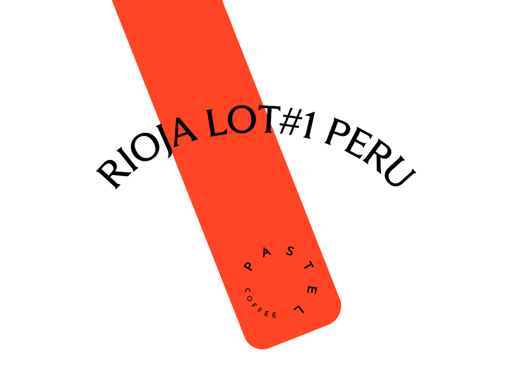

한국에는 멋진 로스터리가 많습니다.
각자의 색깔을 가지고 꾸준히 좋은 커피를 볶는 분들을 만나면 감사한 마음이 듭니다.
덕분에 어느 지역에 가든 좋은 커피를 만나는 즐거움을 누릴 수 있기 때문입니다.
RBC가 팬이 된 곳들을 안암 손님들께도 소개합니다.
5월에는 그 중 ‘종로구 로스터리’의 커피를 소개합니다.
고궁 나들이 가기 좋은 5월, 종로구의 클래식한 분위기와 어울리는 커피 2종입니다.
| 꽃다발이 연상되는 향긋한 원두 |
| 농장 |
Taraken Gotu Family |
| 지역 |
Ethiopia, Yirgacheffe, Tulise |
| 품종 |
Curume, Wellisho, Dega |
| 가공 |
Natural |
| 에티오피아 타라켄 고투 |
|
꽃다발이 연상되는 향긋한 커피입니다.
복합적인 향과 농밀한 단맛을 가진 커피를 즐기는 분께 추천드려요. 향긋한 향미가 잘 전달되도록 고려하여 추출 레시피를 설계했습니다.
로스팅: 나무사이로
|

| 농장 |
El Barejon(Elver Rioja) |
| 지역 |
Peru, El Diamante, Huabal |
| 품종 |
Catuai, Typica, Bourbon |
| 가공 |
Washed |
| 리오하 페루 |
|
감귤 같은 투명한 산미가 느껴지는 커피입니다. 클래식한 향미와 깔끔한 클린컵을 가진 커피를 즐기는 분께 추천드려요.
로스팅: 파스텔커피웍스
|